A Visit to the Church of Our Lady Of Kazan in Moisenay
In the spring of this year, 2026, I had the great privilege to go and attend liturgy and see the frescoes at the Church of Our Lady Of Kazan (Eglise de Notre Dame de Kazan) in Moisenay, France - an Eastern Orthodox church.
The church building itself was designed and built solely by Archimandrite Euthyme (Wendt) (+1973),
constructed using stones from the surrounding farmland. The church was consecrated in 1964,
and has celebrating the divine liturgy regularly ever since. Fr. Gregory Kroug (+1969), a monastic iconographer, painted the frescoes in the early 1960's. He is an incredibly important
figure in iconography (associated with the 'rediscovery of the icon' that happened in the 20th century), and, painted towards the end of his life, many consider
these frescoes to be some of his best work.
It's incredibly unique that such a high point in Church art has been reached so recently, usually when speaking about the 'height of iconography', discussion is focused
almost entirely on icons and frescoes which were painted in or before the 16th century, before the western influence of the renaissance infiltrated the iconography/liturgical art of the eastern church, helping lead to its disorientation.
More information about the Church and it's history is available on the Church's website (in French):
https://skite-notredame-de-kazan.blogspot.com/p/histoire-de-lermitage.html
This page is currently under construction, but at the bottom of the page, there will be more examples of Fr. Gregory Kroug's work, as well as some other contemporary / historical icons, and other examples of exceptional frescoes.
All images may be clicked to enlarge.

An exterior view of the church from my visit, as it stands today

Father Euthyme on the roof of the church during construction (photo from the archive of V.N. Platonova)
The interior view of the church, it's an unusual construction for an Orthodox church since there is no dome (usually orthodox churches feature a central dome, usually containing a fresco of the icon "Christ Pantocrator". In this case, it was structurally impossible, given the weak cement used, to make a dome like this), the ceiling is more flat, and where the icon of Christ crucified is, is actually constructed from wood).
The triangular composition on the ceiling behind the iconostasis (the wooden screen of icons visible in the bottom third of the picture) is the "Old Testament Trinity", after Rublev's Trinity icon; one of the most celebrated/famous icons/prototypes in Church history.
It's worth noting that there is not a single right angle present anywhere in the design of the building.

Above: Saints on the eastern wall of the church, on the top is St. Theodosius, and below from left to right are St. Dorothea, St. Equal-to-the-Apostles Mary Magdalene (she is holding a vessel with myrrh), and St. Isaac the Syrian.

Above: Saints on the western wall of the church, on the top is St. Athanasius the Great, and below from left to right are St. Great Martyr Catherine, St. Mary of Egypt, and St. Euthymius.

Above: Immediately above the entrance of the church is a fresco of Christ, holding an open book with John 1:1 "And the Word was With God". Surrounding him are the symbols of the four evangelists, an angel, an eagle, a lion, and a bull. Above him, on the simple four-pointed cross, is the icon "The Ancient of Days". On the pillar/wall on the left is the Mother of God, and on the right St. John the Baptist. The small space above the door is for the choir. (Photo Credit Mikhail Bogatyrev).

Detail of the fresco mentioned on the left.

Above: on the western wall, a composition based on the Kiev icon of the Mother of God of the Sign. Surrounding her are her parents, St. Joachim and St. Anna.

Above: On the eastern wall, Sophia, the Wisdom of God (a more symbolic image of Christ), with the Mother of God and Saint John the Baptist surrounding.
Left: The iconostasis (the two larger icons on wood were painted by Sister Joanna (Reitlinger)), and above it the Fresco of the old-testament Trinity. Due to it's placement, it's hard to photograph (and reportedly was uncomfortable/hard for Fr. Gregory to paint on the ceiling here). Architecturally, it's worth noting the triangular windows, Fr. Euthyme placed them so that sunlight shines onto the Chalice when the Priest lifts it up towards the congregation
(Photo below credit to the Church's website).

Left: Me next to an icon of my patron saint, Saint Gregory the Iconographer of the Kiev Caves (12th century). It was my first time seeing a real/painted icon of him in person. Since he is not a very popular saint, it's hard to find icons of him, and even more difficult to find a fresco of him ! I only know of about four icons of him that exist.
Right: Detail of the crucifixion icon on the ceiling.
Orthodox Icons
Icons are one of my life interests. It didn't feel correct to put them on the page of my favorite artwork, since they are not strictly artwork.
When first seeing icons, I was really surprised by how a lot of them employ a reversed perspective, even hundreds of years before linear perspective was 'invented' in Italy during the renaissance. A great essay to read, from Pavel Florensky's "Beyond Vision: Essays on the Perception of Art", is the chapter on Reverse Perspective: https://monoskop.org/images/1/11/Florensky_Pavel_1967_2002_Reverse_Perspective.pdf
Below are images of exceptional historical icons. All images may be clicked to enlarge.
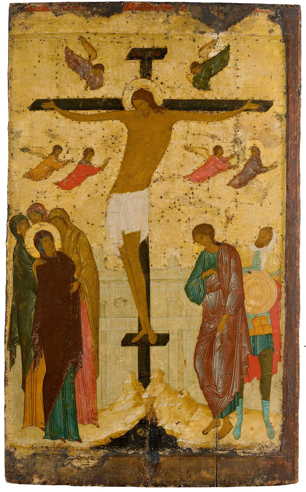
Crucifixion; Painted by Dionysius in ~1500 A.D. - From the festive rite of the Trinity Cathedral of the Pavlo-Obnorsky Monastery
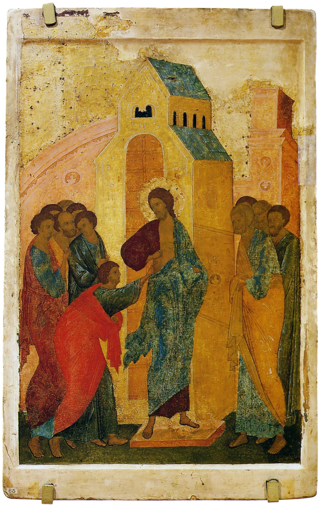
Thomas's Doubt; From the same festive rite as the crucifixion icon on the left. These two icons are the only surviving ones from this specific iconostasis.
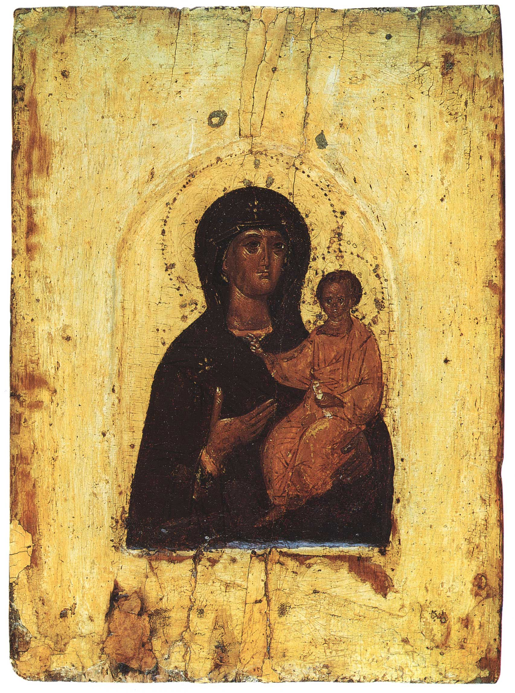
Theotokos Hodegetria; ~1400-1433, Moscow school. An exceptionally simple/humble icon. The silhouette of the Mother of God's maphorion (garment) on the right side of her face is incredible to me.

Icon of the Savior Not Made by Hands; Late 1400s, Northern Russia (Arkhangelsk)
[TODO: OUSPENSKY QUOTE ON THE CRUCIFIXION]
Below is the Deesis tier of icons at the Trinity Cathedral of the Trinity Lavra of St. Sergius. Painted sometime between 1425 and 1427, by Andrei Rublev and his followers.
Personally, I find the icon of St. Nicholas (the 2nd to last image, with the checkered bishop's garment) to be exceptional.
You can see more about this group of icons here (in russian) : https://www.icon-art.info/group.php?lng=ru&grp_id=8
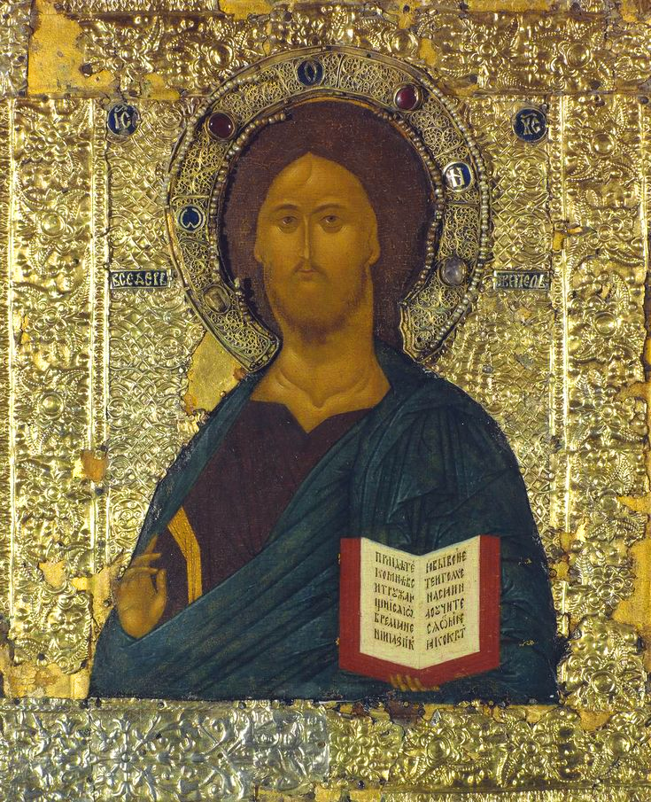
Christ Pantocrator; painted sometime between 1425-1450, Moscow; from one of Rublev's followers
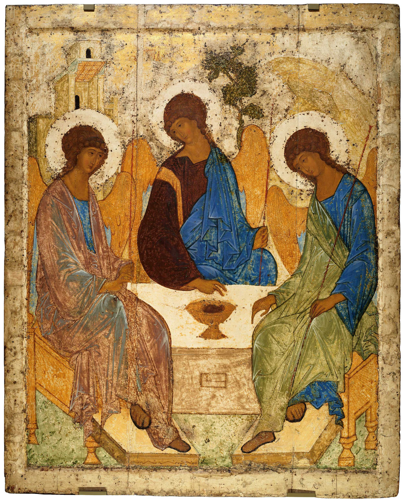
Trinity; Andrei Rublev, ~1411 A.D. - arguably the most famous icon
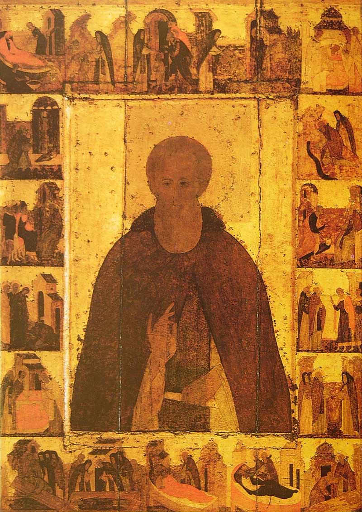
St. Sergius of Radonezh with scenes from his life; end of the 1400s, Moscow school
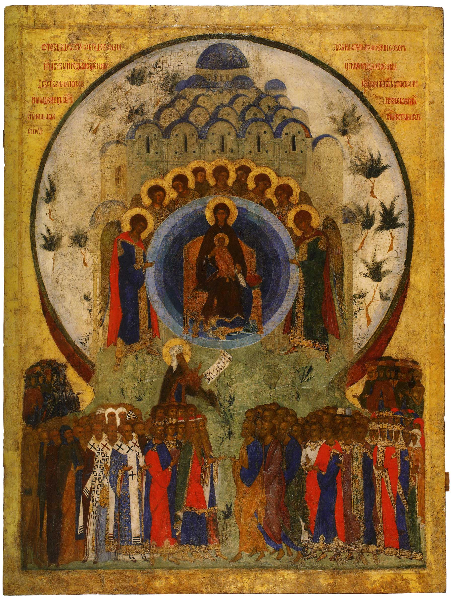
All Creation Rejoiceth in Thee; ~1497, From the local row of the iconostasis of the Dormition Cathedral of the Kirillo-Belozersky Monastery. After a Hymn written by St. John of Damascus
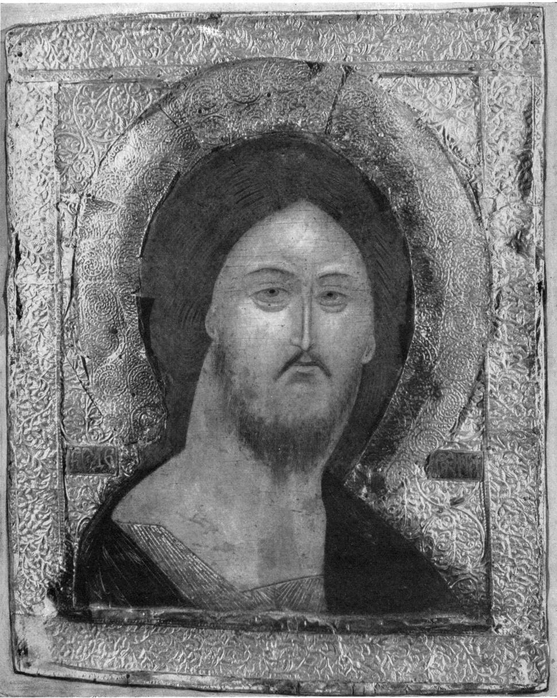
Shoulder image of Christ; ~1450, Moscow (school of Andrei Rublev)
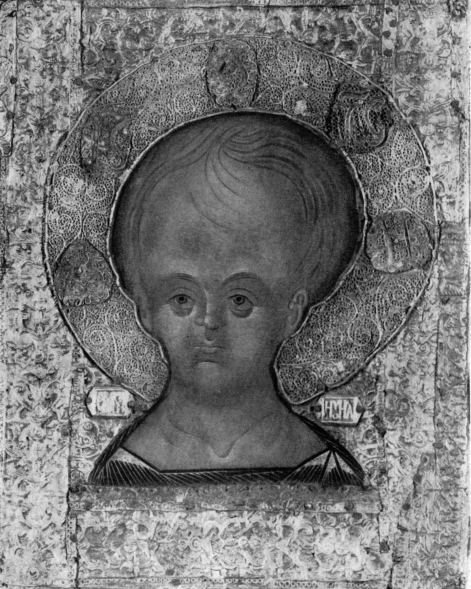
Christ Emmanuel; (young Christ), ~1400-1450, (school of Andrei Rublev)
It seems to me that even icons which are not painted with the best techniques or skill can still have very special and unique visual qualities:
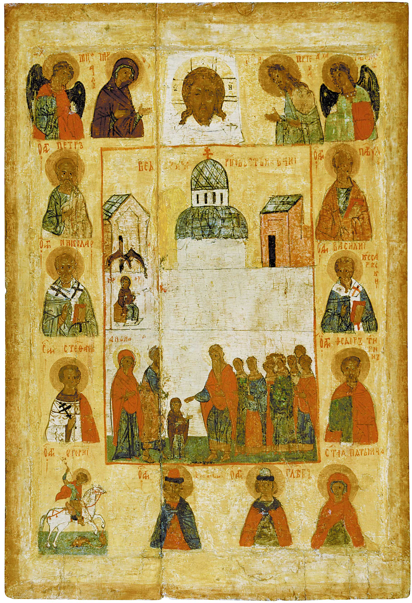
Presentation of the Theotokos in the Temple; ~1450-1500, Northern Russia (Arkhangelsk)
There are only so many icons I can put on this website, to see more, a great book with good range of historical icons is Ouspensky and Lossky's "The Meaning of Icons". Also, anything by V. N. Lazarev is great ("Novgorodian Icon Painting", "Moscow School of Icon Painting", "Rublev", and "Pages from the History of Novgorodian Painting. The Double-Faced Tablets from the St. Sophia Cathedral in Novgorod." are all excellent books - mostly containing images). For books which cover the interior part of the icon, Michel Quenot's "The Resurrection and the Icon", is great, as well as Ouspensky's 2 part series "The Theology of the Icon" (best to read this one after "The Meaning of Icons" as it is a bit heavy).
There are also sites like https://www.icon-art.info/ - which have a huge collection of images in their gallery page (in russian), and they even have a bulletin board page with a "book review" forum, that is great to get PDFs from: https://www.icon-art.info/phpBB2/viewforum.php?f=10
Notable Frescoes
Ferapontov Monastery (Northern Russia)
Painted by Dionisy and a team (his sons ?) over the course of two or three summers in 1500-1502 (some sources say the frescoes were completed in just over one month). This is probably the best example of an entire program of frescoes from the 16th century being so perfectly preserved.
More info and pictures can be seen here: http://www.dionisy.com/eng/museum/ - and here: https://www.icon-art.info/location.php?lng=ru&loc_id=272&mode=mur&page=1
Church of the Transfiguration of Our Savior on Ilyin Street, Veliky Novgorod
These frescoes are attributed to Theophanes the Greek (the teacher of Andrei Rublev), and were executed in 1378. They are the only surviving examples of Theophanes the Greek's frescoes, despite him painting over 40 churches during his life. These specific frescoes are highly unique for the restricted colors (lots of fire/red and sharp light to correspond with the fact that these frescoes are in a church consecrated and dedicated to the Transfiguration.
More pictures can be seen here: https://www.icon-art.info/location.php?&loc_id=10&mode=mur&page=1
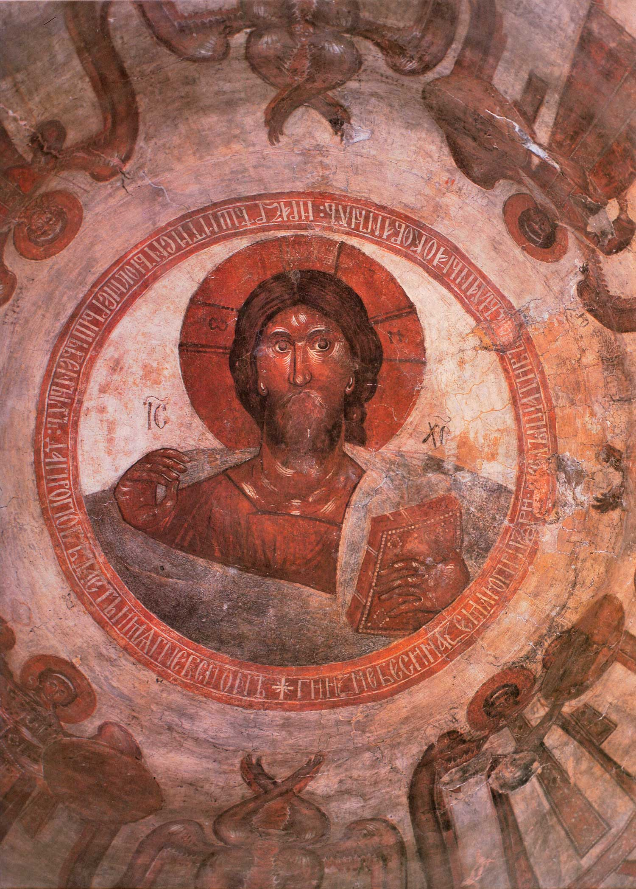
Christ Pantocrator; fresco of the top dome of the church
Dormition Cathedral, Vladimir, Russia
Originally comissioned by Andrew the Pious, the Grand Prince of Vladimir (1157-1174), a few frescoes in this church date from ~1189 A.D. - while the majority date from 1408 A.D. (attributed to Andrei Rublev and Daniil Cherny - some sources only attribute Rublev to the ceiling fresco of the Last Judgement).
More images of the frescoes and the exterior of the church can be seen here: https://www.icon-art.info/location.php?lng=ru&loc_id=135
Writing + images adapted from V.N. Lazarev's book "Andrei Rublev and his school"/"Андрей Рублев и его школа" exist here: https://www.icon-art.info/book_contents.php?book_id=112&chap=2&ch_l2=3#pic46

The Good Thief (St. Dismas) Entering Paradise; If you look closely in the dark red form on the right, you can see that it is the door to paradise that a Seraphim was placed to guard in Genesis after the expulsion from Eden.
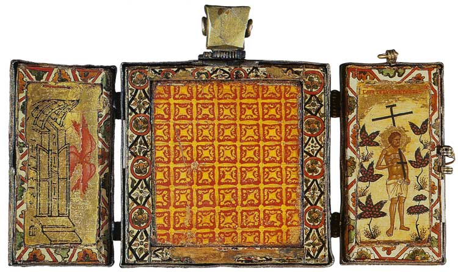
The reverse side from
a deesis tier triptych icon from the late 15th century. This is not from/associated with the Dormition Cathedral in Vladimir, it's just to show the same scene that appears in the (damaged) fresco immediately above this image.
The Rediscovery of the Icon
In the early 20th century,
Works by Fr. Gregory Kroug (+1969), Leonid Ouspensky (+1987), Saint Sophrony of Essex (+1993), and Mother Juliana (Sokolova) (+1981)
There are many articles and books written by people a lot more knowledgeable than me on this subject, and on the work of Fr. Gregory Kroug, Leonid Ouspensky, and Saint Sophrony. I'm including some external links to articles/books that should not be missed if this is of interest to you.
Fr. Gregory:
Born in 1908 in St. Petersburg, Russia, Fr. Gregory emigrated first to Estonia, and then to Paris, attending art school there in 1931. During this time, he met Leonid Ouspensky, who was one of his classmates. Both soon turned their focus from secular work towards the icon. Kroug kept an interest and ties in the avant-garde art scene which existed in Paris at the time; unlike Ouspensky. This was during the time that Kroug and Ouspensky were trying to create a "Western Orthodox" style of iconography - it's my personal opinion that Kroug's maintenence of these ties to secular art was not a hesitance to fully pursue the icon, but was in a way to nourish his creation of icons. For example, Matisse did this inversely, he went to Russia in 1911; and was deeply shocked by icons, he took visual things from the exterior of them to use in his work. Fr. Gregory's interaction with secular work at this time seems more like taking something back from secular painting - In some of his frescoes, we can see dark thick outlines and bright colors, similar to Matisse, things which are not out of place or foreign to the icon, but that were present in Matisse's work... perhaps things that were taken by Matisse from icons, which Fr. Gregory is now taking back and transfiguring, to bring them captive to Christ.
After Fr. Gregory reposed in 1969, his notes were compiled into a book,
Carnets d'un peintre d'icônes. This is an *incredible* book; but unfortunately is only available in French. Each chapter goes over one of the main types of icons (e.g. certain feast days, etc) - and there is a large chapter on representations of God the Father. One of the chapters can be viewed online
by clicking here.
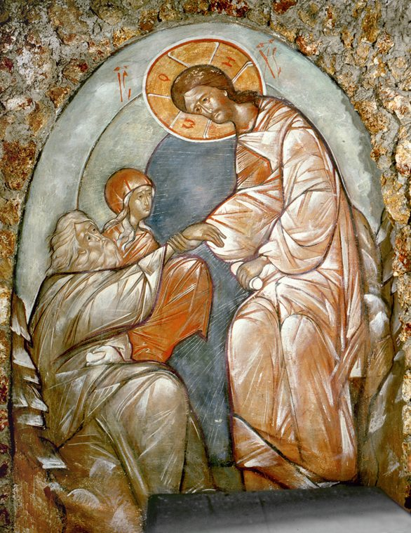
Fr. Gregory Kroug, "Anastasis", Fresco at the Skite of the Holy Spirit in Mesnil-Saint-Denis
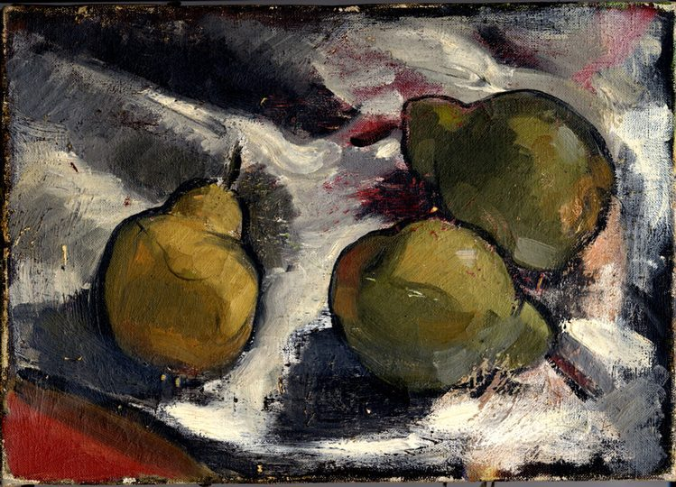
Still life by Fr. Gregory Kroug, from his time as an art student in Paris
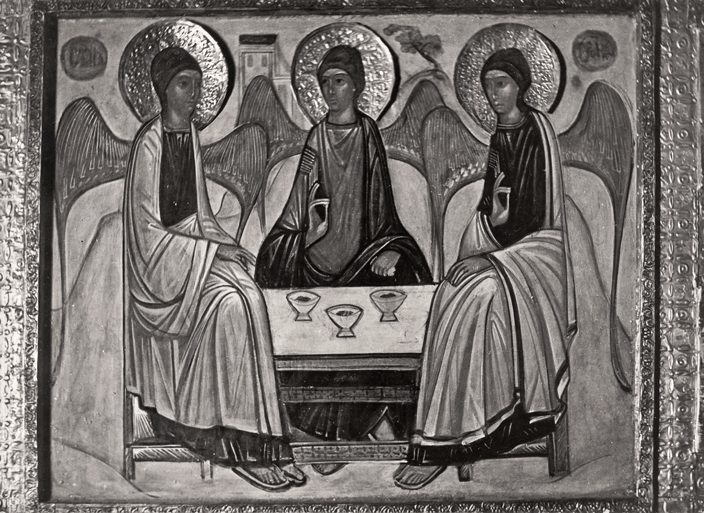
Icon of the Trinity in the "Western Orthodox" style, painted as part of the original iconostasis at rue Petel - so towards the very beginning of Fr. Gregory's 'career' in iconography.
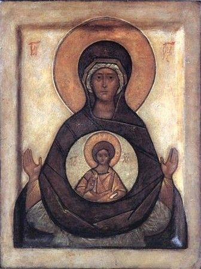
The Mother of God of the Sign, I can't find any information about this specific icon at all (where it is or which year it was made), but it seems incredibly exceptional to me.
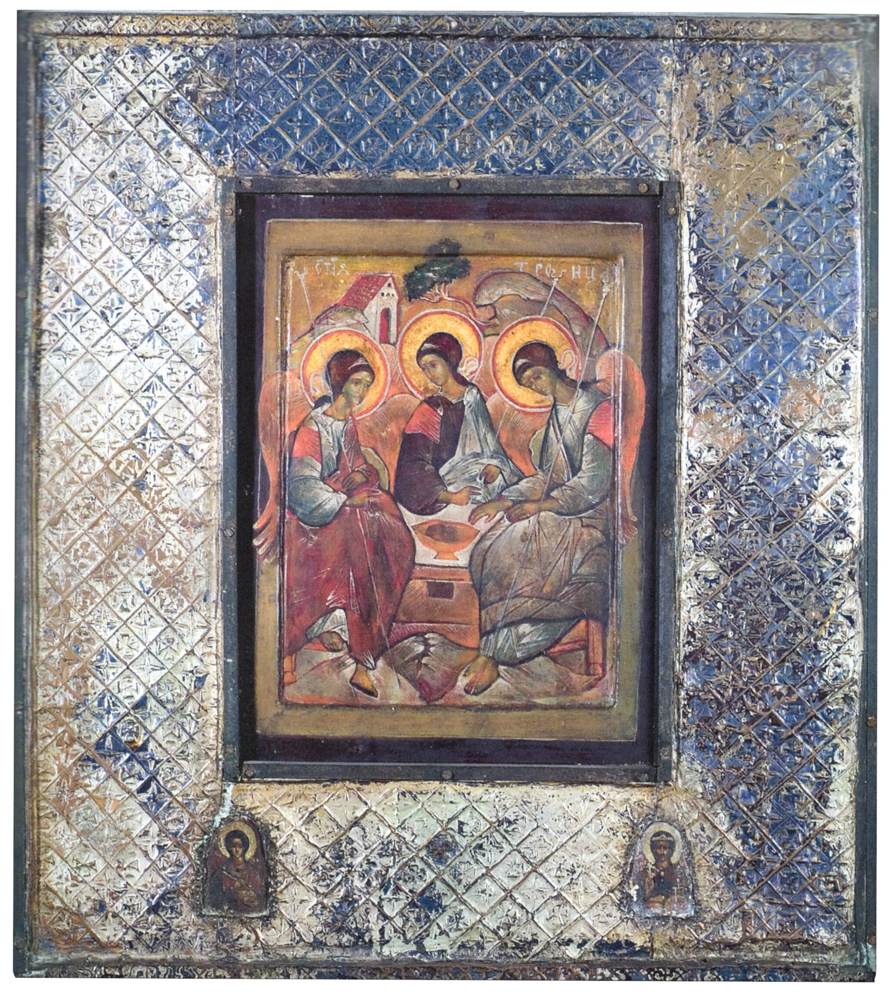
The Trinity, Painted by Fr. Gregory towards the end of his life. The frame it rests in is ancient.

Fr. Gregory Kroug, Triptych (The Fiery Ascension of the Prophet Elijah, Theotokos of the Sign, St. George), painted towards the end of the 1950s - located in the Church of the Holy Trinity (Eglise de la Sainte Trinité), Vanves, France

Saint Gregory, the iconographer of the Kiev Caves, Fr. Gregory's patron saint
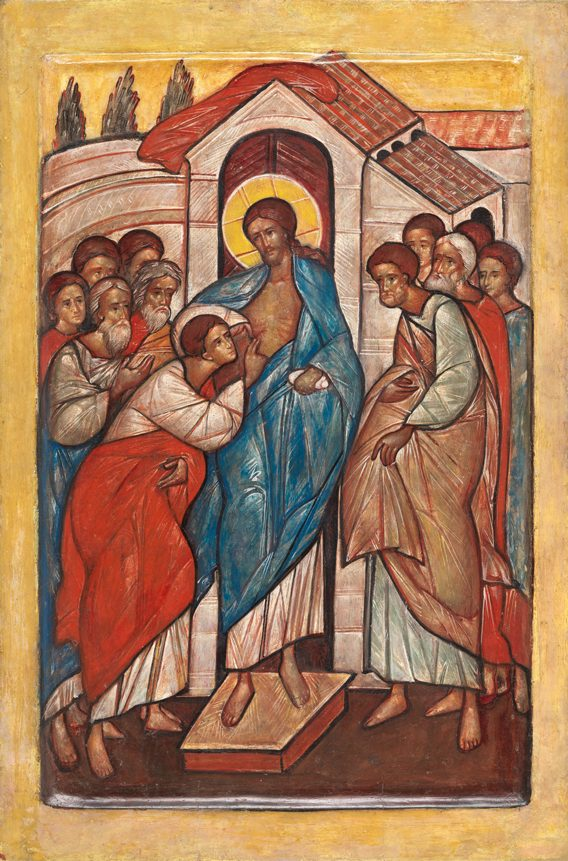
Thomas's Doubt - Fr. Gregory died while painting this icon as a gift for his doctor
Above are images from the Skite of the Holy Spirit in Mesnil-Saint-Denis (https://www.leskitdusaintesprit.fr/) - frescoes by Fr. Gregory.
More fresco work by Fr. Gregory can be seen in this book:
"The Light of Christ", Iconography of Father Gregory Kroug - Book by Andrew Tregubox: https://www.tregubov-icons.com/The-Light-of-Christ-Iconography-of-Father-Gregory-Kroug
For more information about Fr. Gregory, his work, and his life, the following links are wonderful resources:
Fr Gregory Kroug – An Exhibition Honoring the 50th Anniversary of his Repose, by Seraphim O'Keefe: https://orthodoxartsjournal.org/fr-gregory-kroug-an-exhibition-honoring-the-50th-anniversary-of-his-repose/
Jaime Rall: Gregory Krug — Visual Theologian of the Neopatristic Synthesishttps://www.instituteofsacredarts.com/illuminations/2024/12/9/jaime-rall-gregory-krugvisual-theologian-of-the-neopatristic-synthesis
New Liturgical Movement : Russian Iconographer, Fr. Gregory Krug, 1908-1969 https://www.newliturgicalmovement.org/2010/02/russian-iconographer-fr-gregory-krug.html
Website by Emilie van Taack - student of Leonid Ouspensky http://iconeorthodoxe.free.fr/
A list of the locations of much of Kroug's work: https://eglise-orthodoxe-vanves.org/personnalites/moine-gregoire/principales-oeuvres-du-pere-gregoire-kroug/
Emilie van Taak, National Hellenic Research Foundation: Seminar "The Icon through the Teachings of Monk Gregory (Krug) and Leonid Uspensky" https://trois-saints-docteurs.fr/ru/2021/04/12/seminaire-emilie-van-taack/
Leonid Ouspensky:
Biography from St. Gregory of Sinai Monastery: https://www.gsinai.com/leonid-ouspensky-biography
The best way to become familiar with Ouspensky and his work is his writing,
"The Meaning of Icons", Ouspensky and Lossky - https://svspress.com/meaning-of-icons-the-paperback/?srsltid=AfmBOopfLJru5kMTvkKNOzmdgZORENAQkFOyahOcFJQvxi8gH-QMGNIj
"Theology of the Icon", Leonid Ouspensky - https://svspress.com/theology-of-the-icon-set/?srsltid=AfmBOoq_PzkL86hu3u2e-4wqc05Eg5kLN0FqNODYB4G-kc27YAC42IpB
"Recovering the Icon: The Life & Works of Leonid Ouspensky", Patrick Doolan - https://easternchristiansupply.biz/index.php/cse/recovering-the-icon-the-life-and-work-of-leonid-ouspensky-by-father-patrick-doolan.html
Saint Sophrony:
[intro, bio]
[connection w kroug]
[establishment of the monastery]
[frescoes at the monastery]
‘Being’, The Art and Life of Father Sophrony: https://orthodoxartsjournal.org/being-the-art-and-life-of-father-sophrony/
Painting as Prayer, The Art of A. Sophrony Sakharov: https://orthodoxartsjournal.org/painting-as-prayer-the-art-of-a-sophrony-sakharov/
- and a book of the same title as the above: https://essexmonastery.com/bookshop/painting-as-prayer/?srsltid=AfmBOoqRGQXE__c5bopSaJY3PTHNXvGQE4OOnRo8iSDNizYe2vpOUkql
"The Face of Light", St. Sophrony's Icons of Christ: https://essexmonastery.com/bookshop/the-face-of-light/?srsltid=AfmBOor7kpsXx1DW9hxhJ4fsQAOUEbxjajVmYUJY_hqJWrpnO2tkYj51
"A. Sophrony (Sergei Sakharov) Catalogue Raisonné" - Vol 1. "Drawings and Paintings" and Vol. 2 "Icons: commissions & collaborations" and Vol 3. "Discoveries & Works by his Studio" can be found here (among other books focusing on specific series of frescoes): https://essexmonastery.com/bookshop/category/sister-gabriela/
Images of work from these iconographers are below. I'm trying to focus on including images that aren't published online yet, since the links above already include many images.
[TODO: KROUG SECTION]
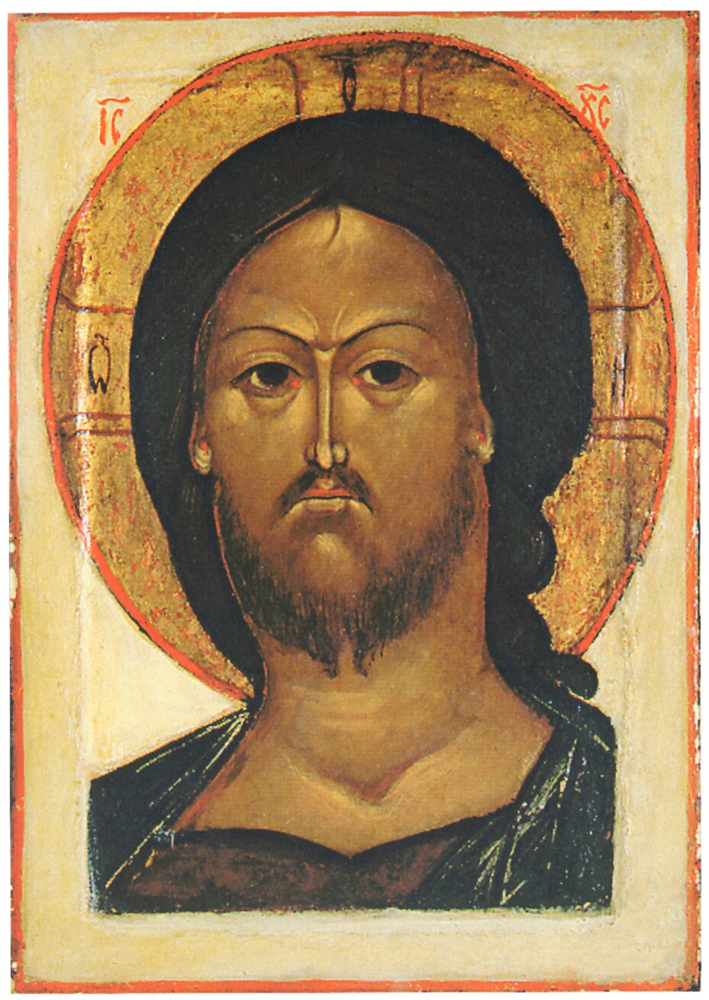
Leonid Ouspensky, Christ of the Fiery Eye (shoulder image of Christ)
A short excerpt from "A Lesson by Leonid Uspensky" from the book: "Theologie En Couleur - Les fresques des fetes en la Cathedrale des Trois Saints Heirarques a Paris"
(
https://editions-orthodoxes.fr/boutique/livres/histoire/theologie-en-couleur-les-fresques-des-fetes-en-la-cathedrale-des-trois-saints-hierarques-a-paris/) - the book is trilingually English, French, and Russian)
Ouspensky (in response to a student who had drawn the hands on an icon in a naturalistic manner): "The hands, the nose, the ears are rather signs, do you see, they are types of outline, but they are used in such a manner that they belong as an integral part of the depicted person. Because these are sense organs they feel something other than natural matter, do you understand? Remember the transfiguration of saint Seraphim; his disciple asks him:
«What are you feeling? - I can smell a perfume that does not exist in this world, and I feel a warmth (it was in winter, wasn't it, in the forest, and both were covered with snow), a kind of warmth which is not that of wooden fire; an absolutely extraordinary kind of warmth»
So, do you see, that is the reason why in an iconographic drawing, sense organs are restricted to signs. In your drawing, the line seeks to imitate nature, and this is not only foreign to the icon, but it is the opposite of the icon. Look what you have done with these dashes, which are supposed to be the folds of the mantle; one does not understand anything any more: neither where it comes from, nor where it goes. In an icon, everything is logical, even the folds of the robe; they underline the shape of the body, they are not lines traced at random, no matter how and no matter where. (
He shows an ancient icon undergoing restoration.) Look at this movement, it is extraordinary because it follows the natural movement of the body, but it is not naturalistic."
Church of the Three Holy Heirarchs, rue Petel, Paris. Ouspensky and Fr. Gregory both worked together on the iconography here.
Leonid Ouspensky, Crucifixion, 1955
Leonid Ouspensky, Anastasis (Descente aux enfers), Beginning of the 1950's
Ouspensky experimented with many different mediums, making a few icons in wood, and to the best of my knowledge, only ever making one in stone.
Ouspensky, Triptych. The holy martyr St. Lydia is the first figure on the left. The triptych itself is from the personal collection of Lydia Ouspensky, Leonid's wife.
Reverse of the same triptych
The Holy Face / The Holy Mandylion - carved in stone
Ouspensky on his death bed, November 1987
[TODO: SOPHRONY SECTION]
[TODO: MOTHER JULIANA SECTION]


{kind=link}
{kind=link}
{kind=link}
{kind=link}
{kind=link}
{kind=link}
{kind=link}
{kind=link}
{kind=link}
{kind=link}
{kind=link}
{kind=link}
{kind=link}
{kind=link}
{kind=link}
{kind=link}
{kind=link}
{kind=link}
{kind=link}
{kind=link}
{kind=link}
{kind=link}
{kind=link}
{kind=link}
{kind=link}
{kind=link}
{kind=link}
{kind=link}
{kind=link}
{kind=link}
{kind=link}
{kind=link}
{kind=link}
{kind=link}
{kind=link}
{kind=link}
{kind=link}
{kind=link}
{kind=link}
{kind=link}
{kind=link}
{kind=link}
{kind=link}
{kind=link}
{kind=link}
{kind=link}
{kind=link}
{kind=link}
{kind=link}
{kind=link}
{kind=link}
{kind=link}
{kind=link}
{kind=link}
{kind=link}
{kind=link}
{kind=link}
{kind=link}
{kind=link}